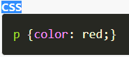
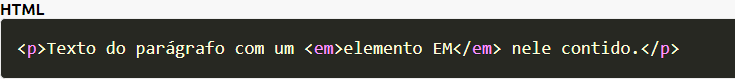
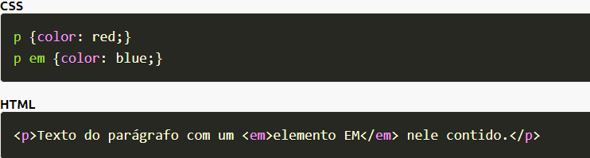

Perguntas
a) É possível sobrepor à aparência (estilo) definida em regras CSS anteriores, mais genéricas, por regras mais espeecíficas? Se possível, essa técnica tem nome? Exemplifique.
Sim é possível, em situações que envolvam regras aplicadas a um mesmo descritor HTML. À essa técnica se dá o nome de Override.
b) Caso definíssemos uma regra CSS mais geral para cabeçalhos de nível 1, 2 e 3, seguida de outra somente para o nível 1, como seria o comportamento do navegador? Descreva os vários cenários possíveis e o comportamento do navegador em cada uma delas.
c) É sempre interessante otimizar o código CSS? Cite algumas vantagens.
Sim, pois assim é possível reuduzir o número de linhas de um código html evitando um código muito extenso além de economizar armanezamento. Sendo possível utilizar a mesma estrutura para vários códigos implementando o código CSS.
d) Defina herança em CSS. Utilize, também imagens para ilustraar tais definições.
Considere a regra CSS mostrada a seguir, destinada a definir a cor do texto de um elemento p (parágrafo) que contém um elemento em (ênfase). Ou seja, o elemento em é filho do elemento p.
 A renderização do parágrafo se dá como mostrado a seguir.
Texto do parágrafo com um elemento EM nele contido.
Notar que embora não tenhamos definido explicitamente uma cor para o elemento em ele foi renderizado na cor vermelha. Isso se deu devido a herança CSS. O que ocorreu foi que o elemento em herdou a propriedade color de seu elemento-pai p.
E, se quiséssemos que o elemento em fosse na cor azul? Nesse caso teríamos que anular o efeito da herança, definindo explicitamente a cor azul para em, como mostrado a seguir.
A renderização do parágrafo se dá como mostrado a seguir.
Texto do parágrafo com um elemento EM nele contido.
e) Podemos sobrescrever características herdadas todas as vezes que desejamos deixá-la mais específica?
Se você deseja anular a herança herdada ou até mesmo deixá-la mais específica, com a técnica de override você consegue, basta adicionar uma nova regra selecionando apenas a tag que você deseja alterar e aplicar uma aparência específica no arquivo css à mesma.